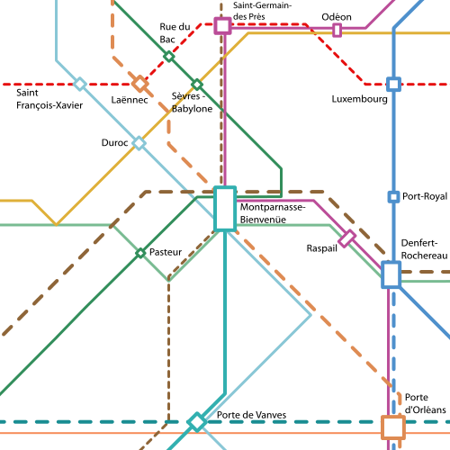

Montparnasse
Commune de Paris


La gare Montparnasse est le pôle de correspondance le plus important de la rive gauche à Paris. Elle n'est malheureusement pas reliée de manière très efficace aux autres grands pôles de la capitale.
Le plan Ile-de-France propose de relier ce pôle à République par une extension de la ligne 11 du métro. Il propose également de mieux la connecter au reste de l'Ile-de-France par la création des RER F et G. Le RER F connecterait la gare à la gare Saint-Lazare, la banlieue nord-est, l'aéroport d'Orly et la banlieue sud-est. le RER G relierait la gare à Issy, au plateau de Saclay à l'ouest, à la gare de Lyon, et l'aéroport de Roissy à l'est
En complément de la création des RER F et G, Le plan Ile-de-France envisage la création d'un service rapide Aéroports-Express qui la relierait à la Défense et aux grand aéroports de l'Île-de-France par le service Aéroports express en un temps réduit.
La création des deux RER et l'extension de la ligne 11, combiné au remaniement des stations de la ligne 4 et 12 pourraient être couplée à une opération d'urbanisme pour réaménager la zone située au nord de la tour Montparnasse pour en faire un lieu plus convivial par la création d'une esplanade pietonne et d'un centre commercial semi enterré comparable au forum des Halles. Cette esplanade pourrait être desservie par le tramway des gares en complément ou en remplacement du bus 91.
Carte
{kind=link}

Cliquer pour agrandir